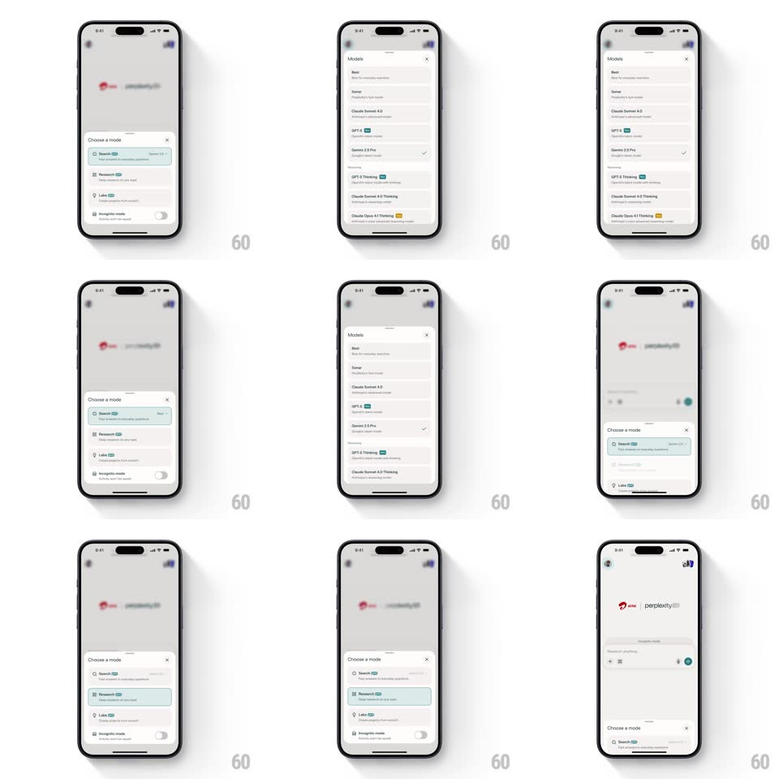

Media
Frame-by-frame

Rebuild this interaction 1:1: Perplexity's model sheet morph - the "Choose a mode" sheet (Search, Research, Labs, Incognito) morphs in place into the taller "Models" list (Best, Sonar, Claude Sonnet 4.0, GPT-5, Gemini 2.5 Pro, Thinking variants) and back, flashing the updated row green on return.

Rebuild this interaction 1:1: Perplexity's model sheet morph - the "Choose a mode" sheet (Search, Research, Labs, Incognito) morphs in place into the taller "Models" list (Best, Sonar, Claude Sonnet 4.0, GPT-5, Gemini 2.5 Pro, Thinking variants) and back, flashing the updated row green on return. ## Integration Integration: stack-agnostic spec - springs given as stiffness/damping, timed motions as duration + curve; map every value to your framework and animation library of choice. ## Scene Light chat screen under a scrim: a bottom sheet titled "Choose a mode" with rows (Search, Research, Labs, Incognito toggle), the selected mode tinted. The Models sheet: header with X, a scrollable list of models with badges and a checkmark on the active one. ## Motion spec Pattern: in-place sheet content morph, ~450ms. - Enter: tapping the model row morphs the sheet: its height grows (spring ~360/26, 350ms) while the mode rows fade out (150ms) and the model rows fade in staggered (30ms, 200ms total); the header title crossfades "Choose a mode" -> "Models". - Select: tapping a model moves the check with a pop (scale 0.5 -> 1, spring ~420/18) and highlights the row (150ms). - Return: the sheet shrinks back to mode height (spring, 350ms), the mode rows returning staggered, and the just-changed row flashes its tint (0 -> 100% -> 30%, 500ms). - Scrim: constant 40% through the whole morph - it never flickers. ## Calibration - The sheet's bottom edge stays anchored; only the top edge grows. - Content swaps inside the same container - the sheet never dismisses between steps. ## Reduced motion Height tweens without spring (250ms); contents crossfade together; no flash. ## Don't miss - The return flash on the changed row is the confirmation cue - do not skip it. - The Incognito toggle is part of the mode sheet only; it never appears in the Models list.